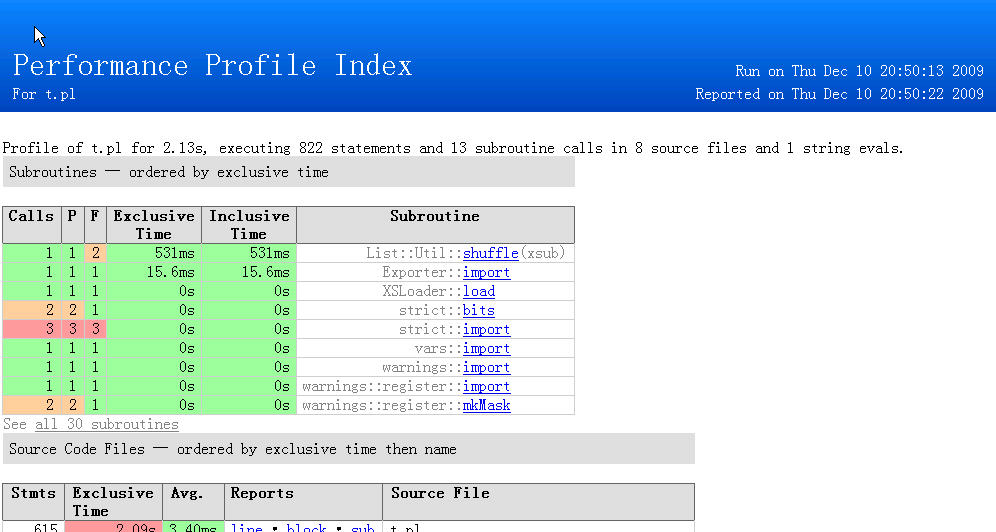
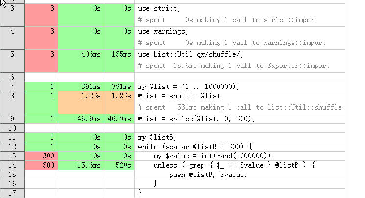

当您有个程序运行得特别慢而无法找到为什么的时候，Profile 当是第一选择（Profile 应当永远在优化之前）。而在 CPAN 众多 Profile 模块中，Devel::NYTProf 当属第一。
比如你有一个简单的 pl 文件
use strict; use warnings; use List::Util qw/shuffle/; my @list = (1 .. 1000000); @list = shuffle @list; @list = splice(@list, 0, 300); my @listB; while (scalar @listB < 300) { my $value = int(rand(1000000)); unless ( grep { $_ == $value } @listB ) { push @listB, $value; } }
运行如下
$ perl -d:NYTProf t.pl
$ nytprofhtml
然后你就可以打开 nytprof/index.html 了

如果点 t.pl 左边的 line, 你能清楚地看到哪一行是比较慢的。

如上脚本只是为了简单介绍，实际中的应该比这复杂多了。但是方法还是一样的。
Devel::NYTProf 不仅仅可以对一个 pl 脚本，还可以在 mod_perl 下测试 web 脚本。比如我们的 Catalyst 脚本，只要在 httpd.conf 里设置
PerlSetEnv NYTPROF file=/root/nytprof.out
PerlModule Devel::NYTProf::Apache
然后重启 Apache, 访问一些网站地址，然后 stop Apache. 在 /root/nytprof.out* 中选取一个文件，然后运行 nytprofhtml -f nytprof.out.XX 即可。
更多更详尽的请参考 Devel::NYTProf 文档和网络中的一些 slide, 如有遇到无法解决的问题，请来Perlchina 的邮件列表询问。
谢谢。